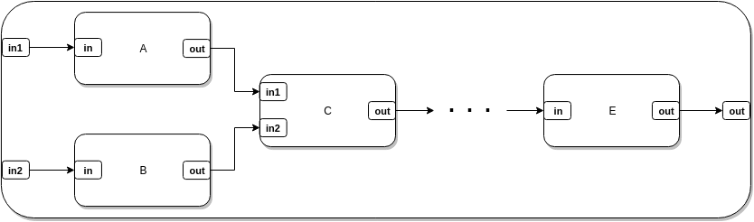
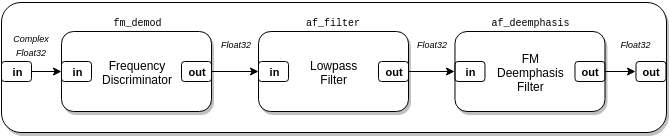
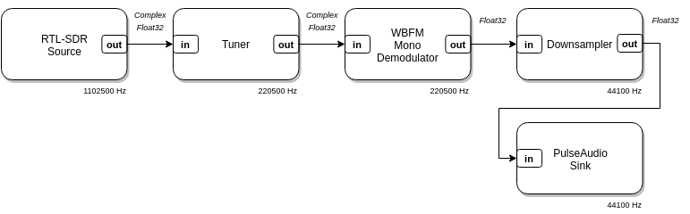
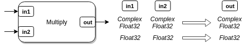
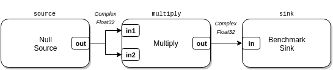
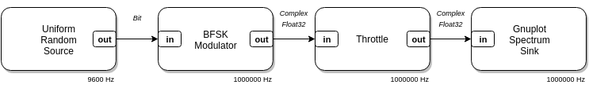
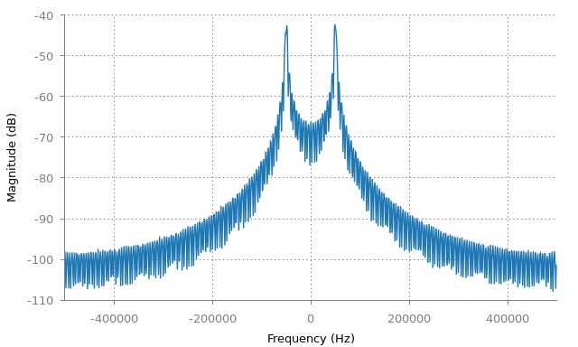

This guide describes the basic concepts behind blocks, data types, and vectors, and demonstrates how to create blocks and data types.
If you’re new to Lua, don’t worry. Lua is a simple, consistent language that can be picked up easily. Check out Learn Lua in Y Minutes for a quick introduction.
The simplest kind of custom block that can be created in LuaRadio is a hierarchical block.

A hierarchical block is a composition of several blocks into a single block, which abstracts the underlying flow graph and provides a simpler input/output port interface. Creating a hierarchical block is a matter of instantiating blocks, connecting them, and defining the boundary input and output ports.
Hierarchical blocks have no runtime overhead in LuaRadio; they’re simply a convenience. When running a flow graph containing a hierarchical block, LuaRadio runs its internal blocks as if they were directly connected into the top-level flow graph.
There are two ways to create a hierarchical block. The first is to use
CompositeBlock directly, and the
second is to derive a block class from CompositeBlock.
In the example below, we’ll create a hierarchical block both ways for a mono Wideband FM Demodulator for FM broadcast radio, described by the following flow graph:

CompositeBlock directlylocal radio = require('radio')
function wbfm_mono_demodulator_factory(tau)
-- Blocks
local fm_demod = radio.FrequencyDiscriminatorBlock(1.25)
local af_filter = radio.LowpassFilterBlock(128, 15e3)
local af_deemphasis = radio.FMDeemphasisFilterBlock(tau)
local demodulator = radio.CompositeBlock()
-- Connections
demodulator:connect(fm_demod, af_filter, af_deemphasis)
-- Type signature
demodulator:add_type_signature({block.Input("in", radio.types.ComplexFloat32)},
{block.Output("out", radio.types.Float32)})
-- Aliases
demodulator:connect(demodulator, "in", fm_demod, "in")
demodulator:connect(demodulator, "out", af_deemphasis, "out")
return demodulator
end
In this example, we create a function wbfm_mono_demodulator_factory() which
returns a CompositeBlock that can be used as an Wideband FM Mono Demodulator
in a flow graph. The argument to the function specifies the time constant of
the FM De-emphasis filter (typically 75 μS in the Americas and South Korea, and
50 μS everywhere else).
-- Blocks
local fm_demod = radio.FrequencyDiscriminatorBlock(1.25)
local af_filter = radio.LowpassFilterBlock(128, 15e3)
local af_deemphasis = radio.FMDeemphasisFilterBlock(tau)
local demodulator = radio.CompositeBlock()
-- Connections
demodulator:connect(fm_demod, af_filter, af_deemphasis)
The blocks section instantiates the internal blocks of the demodulator, as well
as a CompositeBlock that will hold their composition. The connections section
connects the internal blocks. This procedure is identical to building a
top-level flow graph, as seen in the Getting
Started guide.
-- Type signature
demodulator:add_type_signature({block.Input("in", radio.types.ComplexFloat32)},
{block.Output("out", radio.types.Float32)})
The type signature section adds a type signature that defines the names and data types of the boundary input/output ports of the hierarchical block. This step creates the external interface to the hierarchical block, so we may connect other blocks to it.
The first argument of
add_type_signature()
is an array of radio.block.Input()
descriptors, which specifies the name and data type of each input port. The
second argument is the analogous for output ports, with
radio.block.Output() descriptors. In this
case, there is one input named in of type ComplexFloat32, and one output
named out of type Float32. We may call add_type_signature() as many times
as we need to register multiple type signatures of different data types as
needed, but they must all share the same input/output port count and names.
-- Aliases
demodulator:connect(demodulator, "in", fm_demod, "in")
demodulator:connect(demodulator, "out", af_deemphasis, "out")
The aliases section aliases the hierarchical block input/output ports we
defined in add_type_signature() to concrete input/output ports of its
internal blocks. The first one aliases the demodulator’s in port to the
frequency discriminator’s in port. The second aliases the demodulator’s out
port to the de-emphasis filter’s out port. Note that this invocation of
connect() differs from previous invocations, in that the CompositeBlock
passes itself in as a block for connection.
We can then instantiate and use our Wideband FM Mono Demodulator in a flow graph:

radio.CompositeBlock():connect(
radio.RtlSdrSource(88.5e6 - 250e3, 1102500), -- RTL-SDR source, offset-tuned to 88.5MHz-250kHz
radio.TunerBlock(-250e3, 200e3, 5), -- Translate -250 kHz, filter 200 kHz, decimate by 5
wbfm_mono_demodulator_factory(75e-6), -- Wideband FM Mono Demodulator
radio.DownsamplerBlock(5), -- Downsample by 5
radio.PulseAudioSink(1) -- Play to system audio with PulseAudio
):run()
CompositeBlockInstead of building our Wideband FM Mono Demodulator composition in a function,
we can build it in a new block class derived from CompositeBlock. The
resulting block class will look and feel like any other LuaRadio block.
local radio = require('radio')
local WBFMMonoDemodulator = radio.block.factory('WBFMMonoDemodulator', radio.CompositeBlock)
function WBFMMonoDemodulator:instantiate(tau)
radio.CompositeBlock.instantiate(self)
-- Blocks
local fm_demod = radio.FrequencyDiscriminatorBlock(1.25)
local af_filter = radio.LowpassFilterBlock(128, 15e3)
local af_deemphasis = radio.FMDeemphasisFilterBlock(tau)
-- Connections
self:connect(fm_demod, af_filter, af_deemphasis)
-- Type signature
self:add_type_signature({block.Input("in", radio.types.ComplexFloat32)},
{block.Output("out", radio.types.Float32)})
-- Aliases
self:connect(self, "in", fm_demod, "in")
self:connect(self, "out", af_deemphasis, "out")
end
The third line manufactures a new block class with name “WBFMMonoDemodulator”
and parent class CompositeBlock. The name string is used for debugging
purposes.
The remaining lines populate the instantiate() constructor of the
manufactured block class. This method is called when the block is instantiated,
e.g. WBFMMonoDemodulator(...). The inner workings are basically the same as
the function factory above, except that any reference to demodulator is
replaced with self, since the class itself is a CompositeBlock.
We can use this Wideband FM Mono Demodulator in the same example as before,
after replacing wbfm_mono_demodulator_factory(...) with
WBFMMonoDemodulator(...). This Wideband FM Mono Demodulator will behave
identically, but will have the added benefits of a descriptive block name and
being an instance of a well-defined block class.
Before we dive in to implementing blocks, we’ll first need to take a look at LuaRadio’s basic types and how to create and manipulate vectors of them.
LuaRadio has four basic types:
ComplexFloat32,
Float32, Bit,
Byte. Each instance of these types represents
one element, so a radio.types.ComplexFloat32(3, 2) is a complex number with
real value of 3 and imaginary value of 2, and radio.types.Float32(123.0) is a
real number with a value of 123.0. These types are LuaJIT ctypes, distinct from
any of the Lua primitive types.
Each basic type is backed by a C structure type. This is primarily for
implementation reasons, so that LuaRadio can associate a metatable of
operations with it, and so that these instances are distinct from other
occurrences of the underlying C type (e.g. float, uint8_t).
The C types for the four basic types are:
/* radio.types.ComplexFloat32 */
typedef struct {
float real;
float imag;
} complex_float32_t;
/* radio.types.Float32 */
typedef struct {
float value;
} float32_t;
/* radio.types.Bit */
typedef struct {
uint8_t value;
} bit_t;
/* radio.types.Byte */
typedef struct {
uint8_t value;
} byte_t;
Despite the structure wrapper, these types are compatible with the C types
float complex, float, uint8_t, uint8_t, respectively.
These basic types have metatables associated with them, that define basic operations on the type:
local a = radio.types.ComplexFloat32(3, 2)
print(a) --> ComplexFloat32<real=3, imag=2>
print(a + a) --> ComplexFloat32<real=6, imag=4>
print(a * a) --> ComplexFloat32<real=5, imag=12>
print(a:scalar_mul(2)) --> ComplexFloat32<real=6, imag=4>
print(a:abs()) --> 3.6055512428284
print(a:arg()) --> 0.58800262212753
See the LuaRadio Reference Manual for all operations defined on the basic types.
It would be inefficient for blocks to process one sample at a time, as the overhead of serializing the sample and calling the block to process it would exceed the cost of processing it. Instead, blocks operate on a vector of samples at a time, to amortize the overhead of serialization.
A vector is a simple container class for a dynamically-allocated contiguous C
array, with only a few auxiliary methods for string representation, resizing,
and appending. Each basic type provides two static methods for creating a
vector of itself: .vector(num) for a zero-initialized vector, or
.vector_from_array(arr) for a vector initialized from a Lua array.
The example below illustrates the important uses of the Vector:
-- Create a length 4, zero-initialized Float32 vector
local vec = radio.types.Float32.vector(4)
-- Vector properties
print(vec.length) --> 4, length of vector
print(vec.size) --> 16, size of vector in bytes
print(vec.data_type) --> ctype<struct 159>, C type of vector element
print(vec.data_type == radio.types.Float32) --> true
print(ffi.typeof(vec.data)) --> ctype<struct 159 *>, C type of vector data
-- Vector string representation
print(vec) --> [Float32<value=0>, Float32<value=0>, Float32<value=0>, Float32<value=0>]
-- Accessing and modifying vector elements
print(vec.data[0]) --> Float32<value=0>
vec.data[0].value = 5
print(vec.data[0]) --> Float32<value=5>
print(vec) --> [Float32<value=5>, Float32<value=0>, Float32<value=0>, Float32<value=0>]
-- Iterating over a vector's elements
-- (Note: Lua for-loop ranges are inclusive)
for i = 0, vec.length-1 do
print(vec.data[i])
end
--> Float<value=5>
--> Float<value=0>
--> Float<value=0>
--> Float<value=0>
-- Resizing a vector
vec:resize(6)
print(vec.length) --> 6
print(vec.size) --> 24
-- Appending an element to a vector
vec:append(radio.types.Float32(42))
print(vec.length) --> 7
vec:append(radio.types.Float32(26))
print(vec.length) --> 8
print(vec.data[6]) --> Float32<value=42>
print(vec.data[7]) --> Float32<value=26>
Much of block processing consists of either iterating over a vector and
modifying its elements, or passing the vector to an external library. Since
vec.data is a float * (in the example above) and vec.length is its
length, we have all of the information we need to pass the vector memory to an
external library for processing.
Resizing a vector only causes a re-allocation of the underlying memory when it is grown to a larger size. The underlying memory is retained on resizing to a smaller size; just the bookkeeping is updated.
All vectors are allocated with page alignment. This is to enable their processing with certain library routines that require, or perform better with, aligned buffers. This is often because SIMD operations are involved.
Note that a Vector’s data is a C pointer with zero-based indexing, where as
Lua uses one-based indexing for its arrays. This inconsistency seems terribly
confusing, but in practice doesn’t pose much ambiguity: just think C or
low-level when working with sample data, and Lua or high-level when working
with block arguments and curly bracket arrays.
LuaRadio blocks are written in pure Lua, but may interface with external libraries via the LuaJIT foreign function interface (FFI) to offload processing, when needed.
Each block is run in an independent process, under its own Lua state. Blocks typically have one hot loop, so they can benefit greatly from LuaJIT’s just-in-time trace compiler, and many pure Lua blocks do achieve good performance without needing acceleration from an external library.
In other cases — particularly when the block can be accelerated by SIMD extensions — being able to prototype in pure Lua first, before wrapping an external library, is a nice convenience in block development and can serve as a fallback implementation for non-real-time applications.
Blocks are classes manufactured by the
radio.block.factory(name)
factory function. Blocks implement all of their functionality with four
methods:
instantiate(...) — constructorinitialize() — initialization (optional)process(...) — main work methodcleanup() — clean up (optional)The instantiate(...) method is the block constructor, called when the block
is instantiated. This method should establish basic state and register the
block’s type signatures.
The initialize() method is called by the framework for additional block
initialization before the block is run. In this method, the block’s
differentiated type signature and sample rate are available to the block, and
can be used to perform additional initialization.
The process() method is the main work method of the block. It receives
immutable input vectors of samples as arguments, and returns output vectors of
samples. This method is called repeatedly by the framework to process inputs
into outputs.
The cleanup() method is called by the framework when the flow graph has
collapsed, right before the block exits. This method can be optionally
implemented to perform additional clean up, if necessary.
Finally, source blocks and blocks that modify the sample rate must implement
the get_rate() method, which returns the block’s sample rate as a number, in
samples per second.
The template below provides an outline of the block methods and what can be done in each one:
local radio = require('radio')
local MyBlock = radio.block.factory('MyBlock')
function MyBlock:instantiate(...)
-- Perform instantiation here
-- Call self:add_type_signature(<inputs>, <outputs>) for each type signature
end
function MyBlock:initialize()
-- Perform initialization here
-- Can use self:get_input_type(), self:get_output_type(), self:get_rate()
-- to get differentiated type signature and sample rate
end
function MyBlock:process(...)
-- Process input samples and return output samples here
end
function MyBlock:cleanup()
-- Perform cleanup here
end
return MyBlock

A type signature defines the names and data types of input and output ports.
Type signatures must be added in the instantiate(...) method of a block, so
that the block can be connected into a flow graph after it has been
instantiated. When a flow graph is run, every block — starting from sources,
downstream to sinks — is differentiated into the type signature that is
compatible with its input types.
The syntax for adding a type signature is:
self:add_type_signature(<inputs>, <outputs>)
The first argument of
add_type_signature()
is an array of radio.block.Input()
descriptors, which specify the name and data type of each input port. The
second argument is analogous, with
radio.block.Output() descriptors, for output
ports. We may call add_type_signature() as many times as needed to register
type signatures of different data types, but they must all share the same
input/output port count and names.
Source and sink type signatures can be described with an empty array for inputs or outputs, respectively.
Below are some examples of type signatures:
-- One ComplexFloat32 input named `in` and one Float32 output named `out`
self:add_type_signature({radio.block.Input('in', radio.types.ComplexFloat32)},
{radio.block.Output('out', radio.types.Float32)})
-- Two Float32 inputs named `in1` and `in2`, and one Float32 output named `out`
self:add_type_signature({radio.block.Input('in1', radio.types.Float32),
radio.block.Input('in2', radio.types.Float32)},
{radio.block.Output('out', radio.types.Float32)})
-- Byte source, one Byte output named `out`
self:add_type_signature({}, {radio.block.Output('out', radio.types.Float32)})
-- ComplexFloat32 sink, one ComplexFloat32 input named `in`
self:add_type_signature({radio.block.Input('in', radio.types.ComplexFloat32)}, {})
A type signature may also specify custom process() and initialize()
methods. When the block is differentiated, its process() and initialize()
methods are bound to these methods.
self:add_type_signature(<inputs>, <outputs>[, <process method>, <initialize method>])
For example:
-- Complex-valued type signature
self:add_type_signature({radio.block.Input('in', radio.types.ComplexFloat32)},
{radio.block.Output('out', radio.types.ComplexFloat32)},
self.process_complex, self.initialize_complex)
-- Real-valued type signature
self:add_type_signature({radio.block.Input('in', radio.types.Float32)},
{radio.block.Output('out', radio.types.Float32)},
self.process_real, self.initialize_real)
If a block with the type signatures above is differentiated to the
ComplexFloat32 type, then initialize() will be mapped to
initialize_complex(), and process() will be mapped to process_complex().
Analogous mapping occurs in the Float32 type differentiation.
This feature removes redundant differentiation from the critical path of
process() and makes it easier to separate type-dependent initialization and
processing code in a block.
A block can look up its differentiated types in initialize() or process()
with the get_input_type()
and get_output_type()
methods. See the LuaRadio Reference Manual
for more information.
In the example below, we create a multiply block capable of multiplying complex-valued or real-valued inputs.
local radio = require('radio')
local MultiplyBlock = radio.block.factory('MultiplyBlock')
function MultiplyBlock:instantiate()
self:add_type_signature({radio.block.Input("in1", radio.types.ComplexFloat32),
radio.block.Input("in2", radio.types.ComplexFloat32)},
{radio.block.Output("out", radio.types.ComplexFloat32)})
self:add_type_signature({radio.block.Input("in1", radio.types.Float32),
radio.block.Input("in2", radio.types.Float32)},
{radio.block.Output("out", radio.types.Float32)})
end
function MultiplyBlock:initialize()
self.out = self:get_output_type().vector()
end
function MultiplyBlock:process(x, y)
local out = self.out:resize(x.length)
for i = 0, x.length - 1 do
out.data[i] = x.data[i] * y.data[i]
end
return out
end
The block constructor instantiate() adds two type signatures with two inputs
and one output. The first is for complex-valued inputs, and the second is for
real-valued inputs.
The initialize() method creates a persistent vector of its differentiated
output type (either ComplexFloat32 or Float32) in self.out, which the
process() method can use to resize and store output samples in.
The process() method resizes its output vector for the input length, performs
the multiplication on the two input vectors x and y, storing the results in
the output vector, and returns the output vector. Note that this process()
implementation is the same for both data types.
Inputs are provided to the block’s process() method in the same order that
they are defined in the type signature. In this case, the first argument x
corresponds to the input in1, and the second argument y corresponds to the
input in2. The framework guarantees that blocks with multiple inputs will
receive equal length vectors for all inputs, so x.length and y.length are
the same in process(). The framework also guarantees that all inputs to a
block have equal sample rates.
Although we could have created a new output vector in process(), instead of
reusing self.out, it would lead to unnecessary memory allocations and
deallocations as the vector is created on each call to process() and later
garbage collected. If this block were in the path of high sample throughput,
then this can also cause more active memory usage than necessary, as the
garbage collector plays catch-up.
Reusing self.out allows the output vector to approach a steady state size, as
it is resized to accommodate the inputs. In turn, this allows the block to
reach constant memory usage and spend most of its time on computation and
serialization.
There are two ways to go about testing a block. The first is manually, by calling the block directly in a test script. This requires differentiating and initializing the block first, so that the correct type signature is selected and the block is initialized. For example:
-- Instantiate
local multiply = MultiplyBlock()
-- Differentiate to Float32 type
multiply:differentiate({radio.types.Float32, radio.types.Float32})
-- Initialize
multiply:initialize()
-- Now, we can use process()
local a = radio.types.Float32.vector_from_array({1, 3, 5})
local b = radio.types.Float32.vector_from_array({2, 4, 6})
local c = multiply:process(a, b)
print(c) --> [Float32<value=2>, Float32<value=12>, Float32<value=30>]
A block is differentiated with
differentiate()
by providing an array of its input data types. In this case, an array of two
Float32 data types was provided, so that the block would be differentiated
into the type signature with two Float32 inputs and one Float32 output.
The second way of testing a block is with LuaRadio’s unit testing suite. This suite provides a block testing jig, where only the block arguments, input vectors, and expected output vectors need to be specified. For example:
local radio = require('radio')
local jigs = require('tests.jigs')
jigs.TestBlock(MultiplyBlock, {
{
desc = "simple test",
args = {},
inputs = {radio.types.Float32.vector_from_array({1, 3, 5}),
radio.types.Float32.vector_from_array({2, 4, 6})},
outputs = {radio.types.Float32.vector_from_array({2, 12, 30})},
},
-- More unit tests follow
}, {epsilon = 1e-6})
This test can then be run with busted from the LuaRadio repository:
$ busted multiply_test.lua
●
1 success / 0 failures / 0 errors / 0 pending : 0.013749 seconds
$
Many of testing jig specifications in the LuaRadio test suite are code
generated with Python 3. See the LuaRadio tests/ folder for more
details.
LuaRadio includes a BenchmarkSink for
benchmarking blocks. This sink reports the average throughput of samples
delivered to the sink in samples per second. This throughput can be used as a
rough performance benchmark of a block.
For example, to benchmark the MultiplyBlock we built above:

local radio = require('radio')
local source = radio.ZeroSource(radio.types.ComplexFloat32, 0)
local multiply = MultiplyBlock()
local sink = radio.BenchmarkSink()
local top = radio.CompositeBlock()
top:connect(source, 'out', multiply, 'in1')
top:connect(source, 'out', multiply, 'in2')
top:connect(multiply, sink)
top:run()
In this flow graph, the multiply block inputs are fed by a
ZeroSource, which sources zero-valued
samples, and the multiply block output is connected to a BenchmarkSink, which
counts received samples over time. The BenchmarkSink periodically reports the
average rate of samples consumed.
The BenchmarkSink is technically benchmarking the entire flow graph,
including the ZeroSource and the framework’s overhead of serializing samples
between blocks. However, in this case, the MultiplyBlock is the computational
limiting factor by several orders of magnitude, so the overhead of ZeroSource
and the framework is relatively insignificant, and the resulting rate
corresponds roughly to that of the MultiplyBlock. Other situations may
require a different strategy for benchmarking (see caveats below).
Running this flow graph on my platform:
$ luaradio multiply_benchmark.lua
[BenchmarkSink] 204.70 MS/s (1.64 GB/s)
[BenchmarkSink] 204.57 MS/s (1.64 GB/s)
[BenchmarkSink] 205.03 MS/s (1.64 GB/s)
[BenchmarkSink] 203.60 MS/s (1.63 GB/s)
[BenchmarkSink] 202.17 MS/s (1.62 GB/s)
[BenchmarkSink] 205.98 MS/s (1.65 GB/s)
...
BenchmarkSink results are specific to the platform, affected by CPU load
caused by external processes, and do not take into account the performance
degradation that occurs after all available processor cores are utilized in a
larger flow graph. Nonetheless, the BenchmarkSink gives a good idea of
whether or not a block will be a real-time bottleneck to an upstream block of a
particular rate, e.g. an SDR source at 2 MS/s.
It’s also important to point out that while the ZeroSource is applicable to
many signal processing blocks, which will perform their computation regardless
of if the samples are all zero-valued, it might not be the appropriate stimulus
for blocks that have value-dependent code paths. In those cases, a random
source or a deliberately constructed source may be more appropriate.
MultiplyBlockThe MultiplyBlock we created above is pretty fast, but we can interface with
a external library to achieve better performance. In this incarnation of
MultiplyBlock, we will wrap the VOLK library, a
library of signal processing routines with SIMD acceleration. VOLK provides
kernels for multiplying both complex-valued vectors and real-valued vectors,
with
volk_32fc_x2_multiply_32fc()
and
volk_32f_x2_multiply_32f(),
respectively.
The LuaJIT foreign function interface (FFI) allows LuaJIT scripts to call C functions and access C symbols in dynamically loaded external libraries. This requires defining the function prototypes and relevant constants first, like a C header file would, so that LuaJIT has the necessary information to translate types and operate the C ABI.
In the example below, we create FasterMultiplyBlock. This block is similar to
the MultiplyBlock above, except that it uses the VOLK library with the FFI in
its implementation of process():
local radio = require('radio')
local ffi = require('ffi')
local FasterMultiplyBlock = radio.block.factory('FasterMultiplyBlock')
function FasterMultiplyBlock:instantiate()
self:add_type_signature({radio.block.Input("in1", radio.types.ComplexFloat32),
radio.block.Input("in2", radio.types.ComplexFloat32)},
{radio.block.Output("out", radio.types.ComplexFloat32)},
self.process_complex)
self:add_type_signature({radio.block.Input("in1", radio.types.Float32),
radio.block.Input("in2", radio.types.Float32)},
{radio.block.Output("out", radio.types.Float32)},
self.process_real)
end
function FasterMultiplyBlock:initialize()
self.out = self:get_output_type().vector()
end
ffi.cdef[[
void (*volk_32fc_x2_multiply_32fc)(
complex_float32_t* cVector,
const complex_float32_t* aVector,
const complex_float32_t* bVector,
unsigned int num_points
);
void (*volk_32f_x2_multiply_32f)(
float32_t* cVector,
const float32_t* aVector,
const float32_t* bVector,
unsigned int num_points
);
]]
local libvolk = radio.platform.libs.volk
function FasterMultiplyBlock:process_complex(x, y)
local out = self.out:resize(x.length)
libvolk.volk_32fc_x2_multiply_32fc(out.data, x.data, y.data, x.length)
return out
end
function FasterMultiplyBlock:process_real(x, y)
local out = self.out:resize(x.length)
libvolk.volk_32f_x2_multiply_32f(out.data, x.data, y.data, x.length)
return out
end
The example defines the functions for the two VOLK kernels in
ffi.cdef(). The first is for
multiplying complex floats, and the second is for multiplying real floats. The
definitions are function pointers, because VOLK kernels are exposed as function
pointers (despite their prototypes in the VOLK documentation).
These definitions are almost identical to their library prototypes —
volk_32fc_x2_multiply_32fc()
and
volk_32f_x2_multiply_32f()
— with the exception of substituting the VOLK lv_32fc_t type for
complex_float32_t, and the C float type for float32_t.
The substituted types are binary compatible. The substitution is necessary for
the FFI to accept the use of the LuaRadio ComplexFloat32 and Float32 data
types in those argument positions and not raise a type mismatch. Other
alternatives are to use a typedef alias or
ffi.cast().
Next, the example looks up the VOLK library from the radio.platform.libs
table. This pre-loaded table has a few computational libraries
(VOLK,
liquid-dsp,
FFTW) that are used by several blocks in the LuaRadio
codebase for acceleration. To load a different library, the
ffi.load() call can be used
directly.
Rather than sharing one process() method, as the previous MultiplyBlock
implementation did, this version of MultiplyBlock binds a custom process
method with add_type_signature() to each type signature, since the library
call depends on the differentiated type signature.
Each process() method resizes the output vector, calls the library routine
with the input vector data and output vector data, and returns the output
vector.
If we re-run the benchmark from above with this block, we see a roughly 1.5x performance improvement:
$ luaradio multiply_bench.lua
[BenchmarkSink] 297.38 MS/s (2.38 GB/s)
[BenchmarkSink] 304.44 MS/s (2.44 GB/s)
[BenchmarkSink] 301.10 MS/s (2.41 GB/s)
[BenchmarkSink] 306.13 MS/s (2.45 GB/s)
[BenchmarkSink] 305.72 MS/s (2.45 GB/s)
[BenchmarkSink] 299.13 MS/s (2.39 GB/s)
...
This performance improvement is not substantial, given that the block is already in the relatively high rate territory, but in other cases — particularly filtering and DFT — the performance improvement from wrapping an optimized external library can be an order of magnitude or more. Those cases are worth accelerating for real-time applications.
In this FFI example, we create a binary FSK (BFSK/2FSK) modulator block by wrapping the FSK modulator in the digital signal processing library liquid-dsp. This example demonstrates adding new functionality to LuaRadio by wrapping an external library with the LuaJIT FFI.
The fskmod module is a recent addition to liquid-dsp, so it has not yet made
it into the online documentation. Nevertheless,
the docstrings are available in the implementation
here,
and the module is straightforward to use. Below is the liquid-dsp style
documentation reproduced for fskmod:
fskmod_create(m, k, bandwidth) creates and returns a fskmod object with
bits per symbol m, samples per symbol k, and total normalized signal
bandwidth bandwidth.fskmod_destroy(q) destroys an fskmod object, freeing all
internally-allocated memory.fskmod_modulate(q, s, y) modulates the input symbol s, storing k
samples per symbol number of output samples to y.The fskmod module is a M-ary FSK modulator, but since we’re only implementing
binary FSK for our block, we use 1 for the bits per symbol parameter m. The
other parameters (samples per symbol m and normalized signal bandwidth k)
are functions of the block’s input bit rate, output sample rate, and specified
FSK deviation.
In the example below, we create a block that modulates an input bit stream to a complex-valued baseband BFSK signal. The constructor accepts the deviation in Hz (the frequency shift between mark and space frequencies), and the output sample rate of the modulated samples in samples per second:
local radio = require('radio')
local ffi = require('ffi')
local BFSKModulator = radio.block.factory('BFSKModulator')
function BFSKModulator:instantiate(deviation, sample_rate)
self.deviation = deviation
self.sample_rate = sample_rate
self:add_type_signature({radio.block.Input("in", radio.types.Bit)},
{radio.block.Output("out", radio.types.ComplexFloat32)})
end
ffi.cdef[[
typedef struct fskmod_s * fskmod;
fskmod fskmod_create(unsigned int _m, unsigned int _k, float _bandwidth);
void fskmod_destroy(fskmod _q);
void fskmod_modulate(fskmod _q, unsigned int _s, complex_float32_t *_y);
]]
local libliquid = radio.platform.libs.liquid
function BFSKModulator:initialize()
self.samples_per_bit = math.floor(self.sample_rate / radio.block.Block.get_rate(self))
self.modulator = ffi.gc(
libliquid.fskmod_create(1, self.samples_per_bit, (self.deviation / self.sample_rate)/2),
libliquid.fskmod_destroy
)
if self.modulator == nil then
error("Creating liquid fskmod object.")
end
self.out = radio.types.ComplexFloat32.vector()
end
function BFSKModulator:get_rate()
return self.sample_rate
end
function BFSKModulator:process(x)
local out = self.out:resize(x.length * self.samples_per_bit)
for i = 0, x.length-1 do
libliquid.fskmod_modulate(self.modulator, x.data[i].value, out.data[i*self.samples_per_bit])
end
return out
end
The ffi.cdef() call defines the liquid C API for the fskmod module. This
consists of an opaque structure pointer aliased to fskmod, create and destroy
functions for the fskmod object, and the main fskmod_modulate() method,
which takes an input symbol (in our case, a bit) and writes the samples of the
modulated signal to a complex-valued array. These definitions are identical to
those in the liquid.h header file, except for substituting the float complex
type for the compatible LuaRadio data type, complex_float32_t, in
fskmod_modulate().
The block’s initialize() method computes the relevant parameters for
fskmod_create(): the number of samples per bit and the normalized frequency
deviation. The samples per bit parameter is computed by dividing the output
sample rate — specified in the constructor — by the input bit rate. The input
bit rate is looked up by using the Block superclass’s
get_rate() implementation, which
returns the rate of the upstream block, since this block redefines get_rate()
for the samples it produces. It creates the fskmod object with these
parameters, and a ComplexFloat32 persistent output vector in self.out.
The fskmod object is wrapped with
ffi.gc(), which attaches the
fskmod_destroy() finalizer to the object. In effect, fskmod_destroy() will
be called on the fskmod object when it is garbage collected. This allows us
to delegate the resource management of the fskmod to LuaJIT’s reference
counting and garbage collection, so we don’t have to worry about managing it.
The BFSKModulator implements a custom get_rate() because its output
samples, the complex-valued BFSK signal, do not share the sample rate of its
input samples, the bit stream.
The process() method resizes its output vector length to the input bit length
times the number of samples per bit. It calls fskmod_modulate() for each bit
value with the proper offset into the output vector, to modulate each bit into
samples in the output vector, and it returns the output vector.
We can test our BFSK modulator in a simple flow graph, by sourcing it with
random bits from
UniformRandomSource, and sinking
the modulated signal to a
GnuplotSpectrumSink spectrum
plotting sink:

local top = radio.CompositeBlock():connect(
radio.UniformRandomSource(radio.types.Bit, 9600), -- Random bit source, 9600 sample rate (bit rate)
BFSKModulator(100e3, 1e6), -- BFSK Modulator, 100 kHz deviation, 1 MHz sample rate
radio.ThrottleBlock(), -- Throttle block to pace plotting
radio.GnuplotSpectrumSink() -- Spectrum plotting sink
):run()
The resulting plot shows the expected two lobes of the BFSK modulated signal, 100 kHz apart:

The liquid fskmod module actually supports modulating M-ary FSK, by choice of
M in fskmod_create(). This example can be extended to a generic M-ary FSK
modulator by propagating this parameter to fskmod_create() in initialize(),
and by batching input bits into a base-M number that is passed to the input
symbol argument of fskmod_modulate() in process().
LuaRadio’s four basic types serve well for most signal processing needs, but are insufficient for higher-level blocks that need to produce or consume more complex aggregate types. This need arises quickly in digital systems, where a bit stream may be framed into a data frame, a data frame decoded into a packet, and so on.
LuaRadio offers two solutions for custom types. The first, called a CStruct
type, is a type backed by a constant-size C
structure. This is appropriate for fixed size data types and is efficiently
serialized between blocks. All four basic types are themselves, in fact,
CStruct types.
The second, called an Object type, is a
type backed by any Lua object. Instances of this type can be variable size and
contain any Lua primitive data types (tables, numbers, strings, booleans,
etc.). Object types are not as efficient as CStruct types, as they are
marshalled and unmarshalled with MessagePack when
serialized between blocks. However, for relatively low rate uses, they can be
very effective.
CStruct typesCStruct types are manufactured with the
radio.types.CStructType.factory(ctype, methods)
factory function. The first parameter is the name of the C structure type, and
the second parameter is an optional table of methods and metamethods to be
associated with the type.
The type will automatically inherit .vector() and .vector_from_array()
static methods, so that vectors of the type can be created by blocks, as well
as internal serialization methods, so that the framework can serialize the type
between blocks. See the LuaRadio Reference
Manual for more inherited methods of
CStruct types.
In this example, we construct a fictional type FooFrame with a 16-bit address
field, 8-bit type field, and 4-byte data field. We associate a __tostring()
string representation method on the type it, as well as isbeacon() and
isdata() methods to test the fictional frame type.
local radio = require('radio')
local ffi = require('ffi')
ffi.cdef[[
typedef struct {
uint16_t address;
uint8_t type;
uint8_t data[4];
} fooframe_t;
]]
local fooframe_methods = {}
function fooframe_methods:__tostring()
return string.format(
"FooFrame<address=0x%04x, type=0x%02x, data=[0x%02x,0x%02x,0x%02x,0x%02x]>",
self.address, self.type, self.data[0], self.data[1], self.data[2], self.data[3]
)
end
function fooframe_methods:isbeacon()
return self.type == 0x1
end
function fooframe_methods:isdata()
return self.type == 0x2
end
local FooFrame = radio.types.CStructType.factory("fooframe_t", fooframe_methods)
Now, we can use this type like any other CStruct data type:
-- A single FooFrame
local a = FooFrame(0xbeef, 0x1, {0xaa, 0xbb, 0xcc, 0xdd})
print(a) --> FooFrame<address=0xbeef, type=0x01, data=[0xaa,0xbb,0xcc,0xdd]>
print(a:isbeacon(), a:isdata()) --> true false
-- A vector of 10 FooFrame
local vec = FooFrame.vector(10)
print(vec.length) --> 10
print(vec.size) --> 80
print(vec.type) --> ctype<struct 1059>
-- Assign first FooFrame in vector
vec.data[0].address = 0x1234
vec.data[0].type = 0x02
vec.data[0].data = {0xaa, 0xbb, 0xcc, 0xdd}
print(vec.data[0]) --> FooFrame<address=0x1234, type=0x02, data=[0xaa,0xbb,0xcc,0xdd]>
Blocks can specify the data type in type signatures to produce or consume it:
...
function FooFramerBlock:instantiate()
...
self:add_type_signature({radio.block.Input("in", radio.types.Bit)},
{radio.block.Output("out", FooFrame))
end
function FooFramerBlock:process(x)
local out = FooFrame.vector()
for i = 0, x.length-1 do
...
out:append(FooFrame(...))
end
return out
end
...
Object typesObject types are manufactured with the
radio.types.ObjectType.factory()
factory function.
The type will automatically inherit .vector() and .vector_from_array()
static methods, so that vectors of the type can be created by blocks, as well
as internal serialization methods, so that the framework can serialize the type
between blocks. In addition, the type will inherit the .to_json() method to
form a JSON representation, enabling the type to be used with the
JSONSource and
JSONSink. See the
LuaRadio Reference Manual for more
inherited methods of Object types.
After an Object data type is created, its .new() constructor must be
implemented. Additional methods can be defined directly on the data type class.
In this example, we construct a fictional type BarPacket with string address
and data fields. We define its constructor and a __tostring() method.
local radio = require('radio')
local BarPacket = radio.types.ObjectType.factory()
function BarPacket.new(address, data)
-- Create a new object with its metatable set to BarPacket
local self = setmetatable({}, BarPacket)
self.address = address
self.data = data
return self
end
function BarPacket:__tostring()
return string.format(
'BarPacket<address="%s", data="%s">',
tostring(self.address), tostring(self.data)
)
end
Now, we can use this type like other data types:
local a = BarPacket("foo", "abcd")
print(a) --> BarPacket<address="foo", data="abcd">
local b = BarPacket("waldo", "deadbeef")
print(b) --> BarPacket<address="waldo", data="deadbeef">
-- A vector of BarPacket
local vec = BarPacket.vector()
print(vec.length) --> 0
vec:append(a)
vec:append(b)
print(vec.length) --> 2
print(vec.data[0]) --> BarPacket<address="foo", data="abcd">
print(vec.data[1]) --> BarPacket<address="waldo", data="deadbeef">
print(vec)
--> [BarPacket<address="foo", data="abcd">, BarPacket<address="waldo", data="deadbeef">]
As the example shows, BarPacket can contain variably sized fields.
Vectors of Object types provide a similar interface to CStruct type
vectors. Note that their data array is also zero-indexed, for consistency with
CStruct type vectors.
Just like CStruct based types, blocks can use the BarPacket type in type
signatures to produce or consume vectors of the type:
...
function BarDecoderBlock:instantiate()
...
self:add_type_signature({radio.block.Input("in", BarFrame)},
{radio.block.Output("out", BarPacket))
end
function BarDecoderBlock:process(x)
local out = BarPacket.vector()
for i = 0, x.length-1 do
...
out:append(BarPacket(...))
end
return out
end
...
Digital blocks that manipulate Bit typed vectors
often need to convert bits into numbers and perform bitwise operations on them.
The Bit data type provides the static method
.tonumber()
that operates on Bit vectors to extract numbers from bits. This method takes
a Bit vector as its first argument, and optional arguments offset, length,
and bit order to specify most kinds of bit extractions.
Below are a few examples of its use:
local vec = radio.types.Bit.vector_from_array({0, 1, 0, 1})
print(vec.length) --> 4
print(radio.types.Bit.tonumber(vec)) --> 5
print(radio.types.Bit.tonumber(vec, 0, 4, 'lsb')) --> 10
print(radio.types.Bit.tonumber(vec, 2, 2, 'msb')) --> 1
print(radio.types.Bit.tonumber(vec, 2, 2, 'lsb')) --> 2
The Lua 5.1 language, which LuaJIT implements, does not support bitwise
operations natively, but LuaJIT includes a built-in bit
library that can be used to
perform bitwise operations on numbers:
bit.band(0x1234abcd, 0xff) --> 0x000000cd
bit.bor(0x1234ab00, 0xcd) --> 0x1234abcd
bit.rshift(0x1234abcd, 1) --> 0x091a55e6
bit.lshift(0x1234abcd, 1) --> 0x2469579a
bit.bnot(0xfffffff0) --> 0x0000000f
There are two important caveats with the bit library. First, all operations
with bit are limited to 32-bits. For many use cases, this is not a major
issue, and easy to work around. Second, all results of bitwise operations are
returned as signed 32-bit numbers. This is generally not an issue for
bitwise operations, which are agnostic to signedness interpretation (with the
exception of arithmetic shifts), but it is an issue when comparing bitwise
operation results to literals. For example:
print(bit.band(0xdeadbeef, 0x80000000) == 0x80000000) --> false (?)
print(bit.bor(0x0fffffff, 0xf0000000) == 0xffffffff) --> false (?)
print(bit.lshift(0x7fffffff, 1) == 0xfffffffe) --> false (?)
The discrepancy here is that the Lua number type is a double, and the bit operation results are returned as signed 32-bit numbers in a double. 0x80000000 and -2147483648, 0xffffffff and -1, 0xfffffffe and -2 are all two different double numbers.
To compare the result of a bitwise operation to a literal that has its 31st bit
set (the sign bit), first normalize the literal to a signed 32-bit number with
bit.tobit():
print(bit.band(0xdeadbeef, 0x80000000) == bit.tobit(0x80000000)) --> true
print(bit.bor(0x0fffffff, 0xf0000000) == bit.tobit(0xffffffff)) --> true
print(bit.lshift(0x7fffffff, 1) == bit.tobit(0xfffffffe)) --> true
These caveats will disappear and bitwise operations will be a lot more natural if a future version of LuaJIT implements the Lua 5.3 language, which has a 64-bit integer type and native bitwise operations.
When manipulating samples with the LuaJIT FFI, use ffi.copy() instead of C
memcpy() and ffi.fill() instead of C memset() for better performance.
Avoid calling ffi.typeof() or ffi.new() repeatedly in the Block’s
process() critical path, and instead call them once in initialize() (e.g.
when initializing C types, allocating memory, or allocating sample vectors).
For prototyping with Lua, the LuaJIT REPL is a bit too minimalist to be productive. As in the original Lua 5.1 REPL, it requires preceding expressions with “=” to print their value, and it doesn’t support dumping tables. I suggest using Torch’s trepl for prototyping, available in LuaRocks. It supports table dumping, pretty printing, tab completion, and line history.
Another alternative is lua-repl.
Install trepl with:
sudo luarocks --lua-version=5.1 --server=https://luarocks.org/dev install trepl-torchless
Add a Lua path modification to allow local loading of the radio package, and
an alias to run trepl under LuaJIT:
export LUA_PATH="./?/init.lua;;"
alias th='luajit /usr/lib/luarocks/rocks-5.1/trepl-torchless/scm-1/bin/th'
Start the REPL with:
th
Install linenoise and lua-repl with:
sudo luarocks --lua-version=5.1 install linenoise
sudo luarocks --lua-version=5.1 install luarepl
Add a Lua path modification to allow local loading of the radio package, and
an alias to run lua-repl under LuaJIT:
export LUA_PATH="./?/init.lua;;"
alias lua-repl='luajit /usr/lib/luarocks/rocks-5.1/luarepl/0.9-1/bin/rep.lua'
Start the REPL with:
lua-repl
For some blocks, it may be more productive to prototype signal processing routines in Python, with libraries like numpy, scipy, and matplotlib, which allow for more traditional sample by sample development and plotting than a flow graph paradigm like LuaRadio. When the routine is ready, it can be ported to a LuaRadio block for performance and reusability.
Samples from LuaRadio can be dumped to a file with the
RawFileSink,
IQFileSink, or
RealFileSink, and imported into Python
for inspection with the
numpy.fromfile()
function. The numpy.float32 type is compatible with LuaRadio’s Float32
type, and the numpy.complex64 type is compatible with LuaRadio’s
ComplexFloat32 type. The reverse is also possible with numpy ndarray’s
.tofile()
method, and the RawFileSource,
IQFileSource, or
RealFileSource blocks.